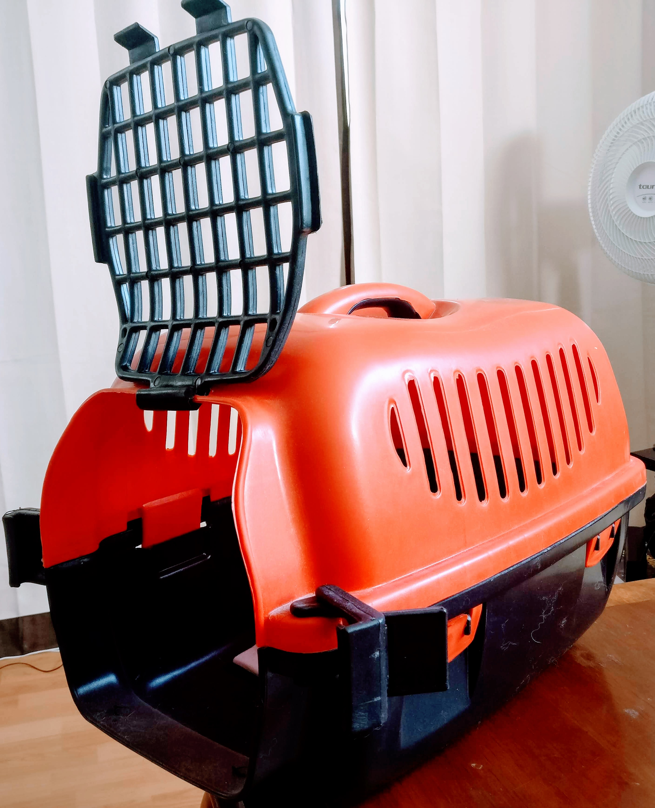

We are back! üë©üê∞
Holi!! Disculpen el abandono pero andábamos de vacaciones, pero ya estamos aqu√≠ üòâ. En la foto Valentina ten√≠a fr√≠o por eso la envolv√≠ en su mantita y la tra√≠a cargada...... Apapachada? Nah! üòÑ
Para los que no saben los conejitos son presas que todo el tiempo tienen que estar alerta para no morir en las garras de un depredador, por lo que los ruidos o movimientos bruscos les asustan y los estresan. Si estas planeando salir de viaje con tu conejo hay cinco cosas importantes que debes tener en cuenta:
- Llevar todos sus chunches (les dejo una checklist con lo esencial para tu conejito).
- Tener una transportadora adecuada para su tamaño.
Para su mayor comodidad y seguridad el conejito debe caber perfectamente en su transportadora y tiene que tener espacio suficiente para estirarse, puedes colocar una manta o un pañalito para perro en la base por si llega a tener un accidente y no se ensucie con su pipi.

- Prevenir las paradas en el camino si es un viaje largo.
Si es un viaje largo en automóvil puedes hacer una parada para verificar el estado de tu conejito y si es posible bajar del auto recuerda usar su arnés para que esté seguro.
- Llevar fruta para mantenerlo hidratado y menos estresado.
Este punto es uno de los más importantes para asegurar la comodidad de tu conejo ya que lo puedes distraer con la fruta y a la vez lo mantendrás hidratado ya que cuando se estresan es dif√≠cil que por su propia voluntad tomen de su bebedero, pero obvio los gorditos üê∞ no le dicen no a una rica manzana. Sin embargo, antes ni durante el camino atiborres a tu conejo de comida para que su viaje sea más placentero.
- Si vas a volar ✈️ verifica los siguientes puntos:
- Verifica si la aerolínea transporta conejitos ya que muchas se limitan a perros y gatos.
- Pregunta cual es su política para transportar animales ya que el peso del conejo y la transportadora tienen que ser los que ellos te indican entre otras cosas que te puedan requerir.
- Pregunta si el conejo viaja en el asiento contigo o lo tienen que poner en otro lugar.
- Si te requieren algún documento de salud consulta con tu veterinario para que te lo brinde, además en algunas aerolíneas o países dependiendo a donde vas a viajar te piden que tu mascota cuente con microchip de identificación o con su pasaporte.
Ahora si déjenme decirles como le hago yo, la noche anterior al viaje preparo todas sus cosas desde su comida, sus accesorios, su cobijita y lavo su casa. Por la mañana hasta que ya estamos listos para irnos con el auto ya cargado con las maletas es cuando pongo a Valentina en su transportadora ya que quiero que pase el menos tiempo posible dentro de ella. Una vez que ya está adentro me subo al auto y la pongo en mi regazo para poder irla cuidando durante todo el camino y darle fruta si la necesita. También llevo un suéter o su manta a la mano por si hace frío se la coloco sobre la trasportadora.
Normalmente, cuando recién agarramos carretera va asustada y nerviosa pero a medida que le hablo se va acostumbrando y se acuesta. Valentina ha realizado viajes de 2hrs de camino e incluso de 6hrs. No he tenido problemas pero si he notado que al llegar a nuestro destino siempre le toma tiempo para estar al 100%, no se si se marea un poco, pero después de unos minutos ya esta saltando y comiendo de nuevo.
Para quienes quieran saber que es lo que necesita un conejito les dejo este link sobre su casa y sus accesorios :
https://chunchesymas.github.io/casa-accesorios-conejo.html
Espero les sirva esta información y si les gustó compártanlo con sus amigos en sus redes sociales
Mis Herramientas de trabajo
Laptop: Acer Aspire R15 Convertible
Cámara: Nikon D5300
Celular: Oneplus 3T